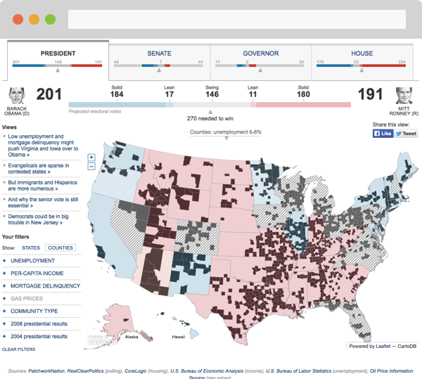

2015 - Early concept. Ongoing project
What I do: Visual design, interaction, prototype (html, css, js)

A tangible interface to explore digital data
2014 - Built as a member of a team affiliated to Stanford’s Institute of Design
What I did: Design thinking, interaction, prototype (Processing, html, css, js)

Full demo: video
A tool to explore a large collection of documents
2014 - Supported by a JSK Fellowhsip at Stanford University
What I did: Design thinking, interaction, prototype (Processing, html, css, js)


Full demo: video
2014 - Supported by a JSK Fellowhsip at Stanford University
What I did: Design thinking, interaction, prototype (Processing, html, css, js)

Full demo: video

Full demo: video
I design media products building on tools and methods to understand how people use and consume information in their daily lives.
I currently manage the Design Thinking program at the media startup First Look Media. I joined the company after a wonderful experience as a JSK fellow at Stanford University, where I followed a multidisciplinary curriculum involving design thinking and computer science, and did in-depth research and prototyping on new interfaces to access, curate and share information. I was incredibly fortunate to have this opportunity.